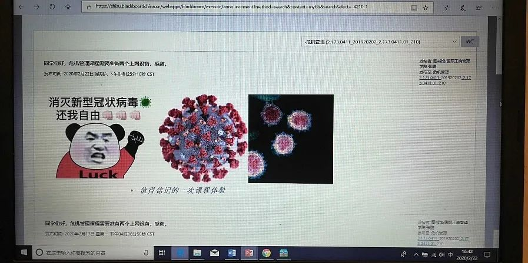

口述实录 | 独自进武汉当心理志愿者，我竟也两次崩溃
原文链接 备份链接 早春的武汉春风拂面，这两天接到爸妈打来的电话，询问我的近况。我告诉他们我过得好着呢：吃着大餐、住着五星级的酒店。其实，我特别想念妈妈蒸的馒头，就算只就着大蒜，我也能吃两个碗大的馍馍。 口述 | 毛 平 整理 | 沈 …
这一代的大学生，喜欢在与课程同步的留言板上留言，同时纷纷默契地关闭了自己那一侧的摄像头（我也没有要求他们开放摄像头）。
文 | 张 鹏
我是1月27日（大年初三）从江苏老家和太太自驾返回上海的。当天17：00左右，车行到崇启大桥入沪检查站大约两公里外，前方车辆已开始排队等待检查后入沪。
高速上的电子显示屏远远地提示“前方防疫检查请保持秩序”，因刹车原因，眼前看不到头的各种车辆红色尾灯和显示屏上的红色字幕抢眼地揉叠在一起。当时的心情里，有一种被卷入未知的感觉，我知道，所有人都正在“见证一段共和国防疫史、交通史、城市史”。这段时间里我能做些什么？这个问题从那一刻开始萦绕心头。

返沪时看到的“前方防疫检查请保持秩序”
第一个十四天：“有点方”
年初二大家庭商议后，取消了春节一切聚会计划。初二晚专门和八十五岁高龄的爷爷（当时爷爷住在三叔家）见了一面后，我们决定提前返沪，并得到了长辈们一致支持。我们同时决定，到沪后自觉在家十四天，尽量减少出门概率，既保护自己，也保护家人，尽管那时上海的气氛实际上还没有特别紧张，也没有明确的从江苏回沪后一定不能出门的规定。
1月28日早上，武汉市的确诊数据从前天的698例升至1590例，上涨了一倍以上，全国各地的数据也在增长。
1月底那几天，其实还是可以在做好个人防护、测体温和出示教工身份证明的前提下进入校园的，去学校的路上已行人稀少，每个人都戴着口罩。到了2月5日，学校正式开始封闭式管理，一般教师需要通过OA系统申请（一般至少需要提前一天）后，才能临时进校。而更重要的事情，是1月底开始，教育部明确“利用网络平台，‘停课不停教、不停学’”的新学期全面网络教学的方针后，对我们这些高校教师的影响。当然，客观而言，从整个教育事业的角度看，首先是对中小学教师和中小学生们的影响。
很快，2月7日和2月8日，学校出台了“2020年春季学期本科生教学方案”和“2020年春季研究生教学方案”。方案主要强调：“教师应于2月28日之前做好相应线上教学准备。上课时间应按既定课表限定的时段正常授课，以免造成不同课程之间的冲突。”并计划从2月11日起开始为期一周的线上课程建设培训，以及培训完成后为期两周的教师自主建课。事实证明，这样的调整是紧扣住了时间节点，使得3月2日的正式网络教学阶段有了保证。当然，刚刚接触网课建设的时候，作为教师也是“有点方”，记得那会儿关于网络教学的段子也是层出不穷。
我去做了社区志愿者
2月5日学校的全面封闭式管理十天后，2月16日起，我所在的小区正式开始出入证管理制度。记得那天天气很冷，出入证领取处就在进入公寓大楼的门厅处，我和太太从社区志愿者手里领到了绿色的纸质出入证，这显然是更加严格管理小区进出的标志。
实际上，所在小区在1月底就已经全面实施唯一进出口控制，测体温和快递无接触安排也在发证之前就已实现，发放出入证，使管理显得更加规范。
但看到发放出入证的过程，使我更添了一分“我能为社区做点什么”的想法。其实我们这些大学老师，平时工作主要是围着学校和学生转，对社区事务，几乎没有太多了解。
但是，眼看到社区志愿者队伍的不容易，再加上在家里实在是待得久了，准备网课这时也略有了一点儿心得，我就想试试和社区取得联系，加入志愿者队伍。和太太一说，她也很快就同意了，不过要求我戴上两层口罩进行防护，以及穿一件厚外套防风。
我去找了社区书记，怎么有联系方式的呢，这还是两年前在职党员到社区登记时留的。社区的陆书记表示欢迎我能加入志愿者队伍，并很快将我拉入了社区志愿者群。当时志愿者群里一共有20人，后来慢慢壮大了一些。
二月中下旬的上海，早上的天气还真的凉。社区书记和社区主任将“最好的防护设备”——街道办事处配给社区办公室的亮色防风雨衣借给了我，所以才有了以下这张照片。

做社区志愿者时指导来访者登记
我的工作也挺简单，主要是登记来访者和非绿卡住户。但在志愿工作的过程中，也发现确实有个别住户并不配合，有些登记人员也故意不写全相关信息。这个时候，也只能相对严格一些。回想起来，好在我还算有一些教学经验，说服别人的能力还是用上了的。当然，在这样的特殊时期，大多数居民是非常配合志愿者工作的。
网络教学阶段的返校值班
3月2日起，我所在高校的网络教学阶段正式开始了，这个不一样的开学值得铭记。

准备教学阶段自行制作的网络教学平台通知
这学期我承担有一些课程，同时学校也希望各校内二级单位有教师到班值守，我进入了3月到校总值班的教师名单。能够返校工作，心情还是很不错的。
我所在的学校，校方推荐的课程资源管理平台有三种，视频教学（点播&直播）平台有五种，教师可以选用和组合这些平台并报教务处，负责教务工作的老师们再统一向同学们发布，同学们对照课表，在上课时间进入教师开放的平台系统，就可以开始课程了。
由于有之前的教学测试和相对充分的教学准备，我这两周的网络教学还是相对顺利的。和正式在课堂里教学相比较，主要的感觉是上课节奏还是要快一些，教师自己讲的比例要大幅提高。毕竟，这还不是真正的课堂教学环境，大家的互动性还是要打些折扣。
由于是开着视频授课，我告诉同学们我在学校办公室，保证了网速和不会有家里的孩子来干扰，有些同学对我现在就能返校表示“有些羡慕”。这一代的大学生，喜欢在与课程同步的留言板上留言，同时纷纷默契地关闭了自己那一侧的摄像头（我也没有要求他们开放摄像头）。作为老师，对着电脑开展课程讲授和知识点讲解，有时候还得念一遍同学们在留言板上的提问再作回答，当然会有点“莫名的忧伤”。其实作为高校教师中的一员，我想我们中的大多数当然不那么想成为“主播”，还是盼望病毒早日“退散”，让我们能够有正常的授课和工作环境。
现在，校园里春意已渐浓，国内战胜新冠病毒的好消息也不断传来，战“疫”在全世界层面已进入下半场。我们期盼的，一是希望同学们能够早日平安、健康地返回校园，二是包括同学们在内的全体中国人，有更强大的独立思考和明辨是非的能力。
作者为上海外国语大学图书馆副馆长、教授


· 欧洲27国无一幸免，张文宏：后续发展不容乐观，跨年度疫情风险越来越大
· 我在海外 | 看到英国政府发布“群体免疫”政策，我开始慌了
· 军事 | 受疫情影响，北约“寒冷反应”演习取消，规模更大的“欧洲捍卫者20”呢？
新民周刊所有平台稿件， 未经正式授权
一律不得转载、出版、改编或进行
与新民周刊版权相关的其他行为，违者必究


原文链接 备份链接 早春的武汉春风拂面，这两天接到爸妈打来的电话，询问我的近况。我告诉他们我过得好着呢：吃着大餐、住着五星级的酒店。其实，我特别想念妈妈蒸的馒头，就算只就着大蒜，我也能吃两个碗大的馍馍。 口述 | 毛 平 整理 | 沈 …
原文链接 备份链接 🎧 点击上方图片，跳转「故事FM」小程序，收听真人讲述。记得添加「我的小程序」，一键收听全部故事哟！ 在这次疫情期间，故事FM 采访过武汉的医生、方舱医院的确诊者、还有武汉的癌症患者……，我们试图通过武汉各种群体的故 …
原文链接 备份链接 武汉嫂子“汉骂”视频 “汉骂”嫂子和作家方方 数日前，一段微信语音在网上“一骂而红”，名叫“@雨儿”的业主在她所在的小区群里，用中气十足的武汉方言痛斥社区和中百超市推出“阴阳套餐”，社区推卸责任、置若罔闻。 “我们买一 …
原文链接 备份链接 武汉嫂子“汉骂”视频 “汉骂”嫂子和作家方方 数日前，一段微信语音在网上“一骂而红”，名叫“@雨儿”的业主在她所在的小区群里，用中气十足的武汉方言痛斥社区和中百超市推出“阴阳套餐”，社区推卸责任、置若罔闻。 “我们买一 …
原文链接 备份链接 采访、撰文 | 吴楠 投稿邮箱 | gayspot_edit@163.com 马志远是2020年年初这一次来势汹汹的新冠肺炎疫情中的一名默默无闻的志愿者。虽然在远离疫区中心的地方，但他看着这个城市街头的人流量只有原来的 …